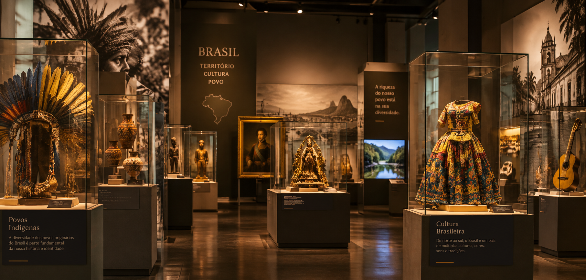

— FUNDAÇÃO E ORIGEM
Uma história que
conecta gerações
O Museu do Brasil foi criado com o propósito de preservar e divulgar a riqueza histórica e cultural brasileira, valorizando as tradições, os costumes e a diversidade do nosso povo.
Nosso espaço busca aproximar as pessoas da história do país por meio de exposições, atividades educativas e experiências culturais. Acreditamos que conhecer o passado é fundamental para construir um futuro melhor para as próximas gerações.

NOSSO LEGADO
A história permanece.
A história do Brasil é feita de culturas, tradições e memórias que merecem ser preservadas e celebradas.
Garanta seu ingresso!